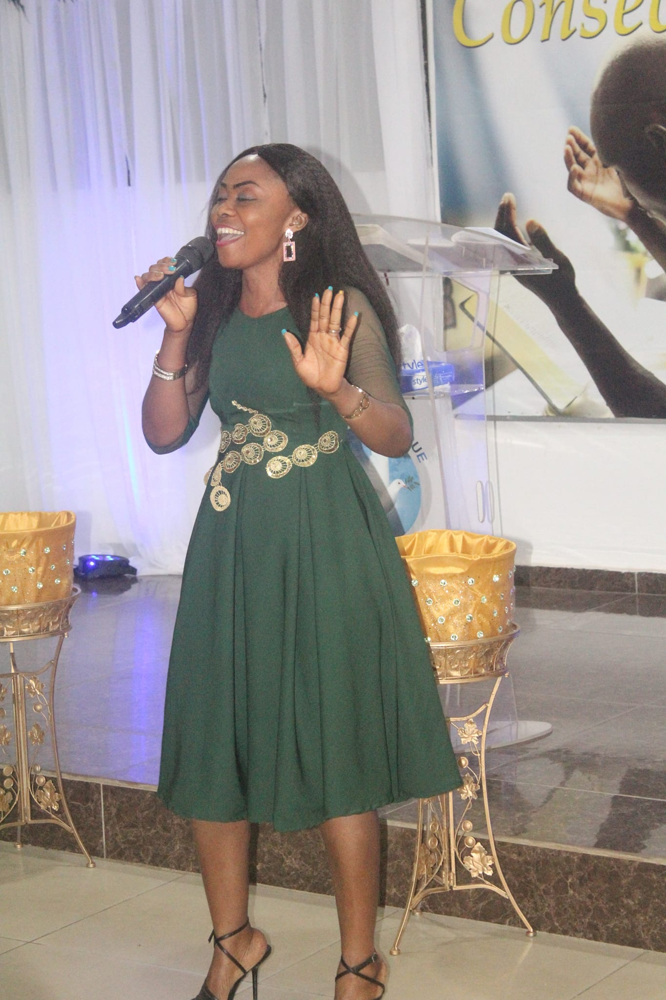

Evènements
Voir plus
Nous sommes un groupe des personnes les plus ordinaires que vous puissiez rencontrer. Nous avons tous nos vies, nos rêves, nos problèmes et nos préoccupations. Cependant, une fois réunis sous ce magnifique toit, nous oublions tout ce qui fait mal. Nous partageons un seul objectif puissant, qui est de nous rapprocher de Dieu mentalement et spirituellement.
En savoir plusNous croyons que l'église est un endroit pour en savoir plus sur notre Dieu ! Si vous cherchez une église où vous pouvez appartenir et où l'amour de Dieu change les gens, vous êtes au bon endroit. Vous trouverez des réponses, la guérison, la restauration et des relations durables avec nous. C'est un endroit pour les vraies personnes et la foi.
MessagesVous pouvez vous attendre à être accueilli dans un environnement amical et positif. Nos sermons et sont remplis de paix et de louanges, de lectures et de messages inspirants de la Bible. Nous sommes une grande famille de membres généreux, serviables et bienveillants. Vous avez une source gratuite de café et de cuissons.
Rejoignez-nous12 Août | 12:00
Le Dîner du Seigneur n'est pas seulement une expression d'adoration pour les croyants, mais par sa nature même, il est évangélique.
19 Août | 14:00
Le pasteur visitait la classe de l'école du dimanche de 4e année pour parler du mariage dans le cadre de la leçon.
26 Août | 16:00
Au cours de la réunion annuelle, il y a eu une longue discussion concernant la nouvelle foi et le nouveau message baptiste.
Chers croyants, que la grâce de Dieu brille sur vous ! Les mots me manquent pour exprimer le bonheur
et la gratitude au plus profond de mon cœur de vous voir ici aujourd'hui. Ouvrez votre esprit et laissez le
saint esprit remplir votre âme avant de continuer.
Je suis le pasteur Coumba Plegnon, le 7e enfant d'une famille de chanteurs de chorale d'église.
J'ai passé mon enfance à jouer autour de l'église et à écouter des sermons. J'ai donné ma vie à Jésus-Christ
et je prêche depuis mon adolescence. Au cours des années suivantes, j'ai servi comme pasteur adjoint dans la
même église où mes parents avaient l'habitude de chanter. Plus tard en 1992, j'ai officiellement démissionné de
mon poste de pasteur et j'ai commencé un ministère.
En 1995, j'ai fondé l'église chrétienne Light of Hope, pour ceux qui ont perdu l'espoir et qui sont désespérés.
Mon église promet un rétablissement spirituel et un réveil bientôt.
"Quelqu'un parmi vous est-il malade ? Qu'ils appellent les anciens de l'église pour prier sur eux et les oindre avec de l'huile au nom du Seigneur. Et la prière offerte avec foi rétablira le malade; le Seigneur les relèvera. S'ils ont péché, ils seront pardonnés."" — Jacques 5:14-15
Nous passons environ 45 minutes à discuter, écouter et apprendre la Bible. Nous croyons que c'est la meilleure façon dont Dieu nous parle. Vous pouvez faire partie de nos sermons en les écoutant en ligne.
INTRO
Écoutez-moi, vous qui poursuivez la justice, qui cherchez l'Éternel ! Portez les regards sur le rocher d'où vous avez été taillés, sur le creux de la carrière d'où vous avez été tirés.